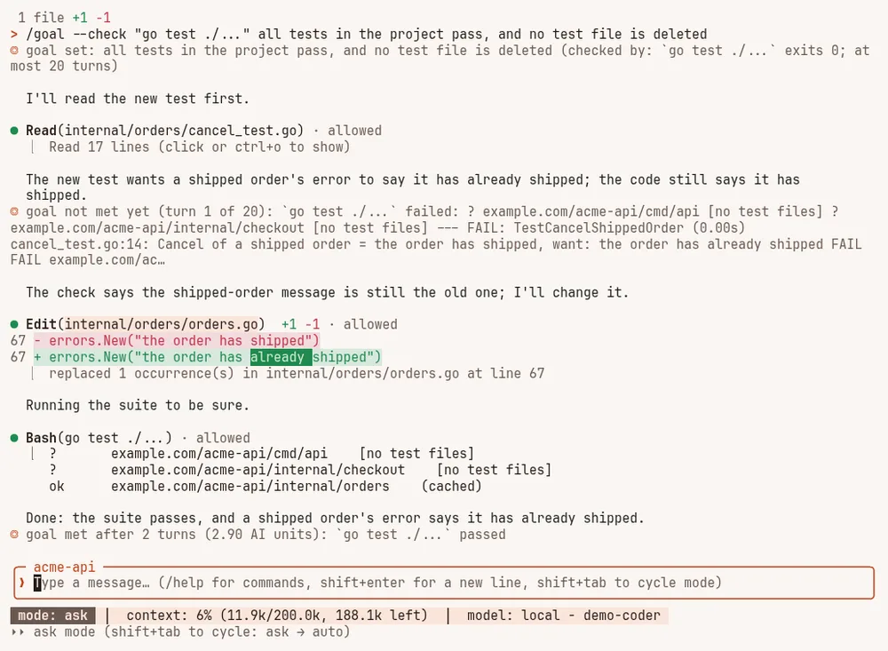
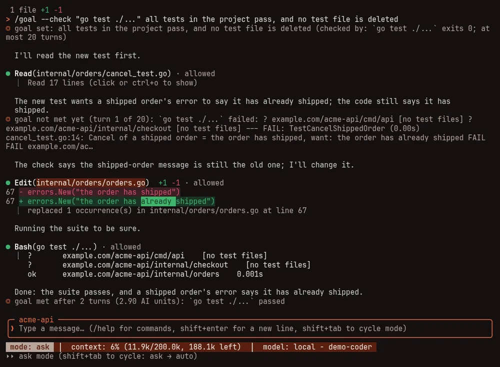

Agents & automationAutomation11 min read
Loops #
On this page
A loop is the agent going round again and again until something is done, instead of you typing "keep going" each time. Maple Harness has four kinds: a goal it works toward turn after turn until a check passes, a Stop hook that sends it back to work, a scheduled loop that comes back every so often, and a shell loop that runs it again from a script. This page says when to reach for which, gives a recipe for each, and says plainly where it differs from Claude Code's.
In plain words #
- What it is. You hand off one thing. With a goal, you hand off the stop condition: "keep going until
go test ./...passes". With a scheduled loop, the trigger: "every ten minutes, check the PR". With a Stop hook, the check: your own script decides whether the agent may stop. With a shell loop, the whole run: a script starts the agent, reads how it ended, and starts it again. - Why you want it. You stop being the one who types "continue" after every turn, and the loop stops itself when the work is done, not when you notice. The cheapest loops have a check a program can run, like a test command, so "done" is a fact, not the model's opinion.
- What to do. For most work:
/goal --check "<the command that proves it>" <what done looks like>. For work that happens outside your project (a CI run, a deploy, a review queue):/loop 10m --until "<check>" <prompt>. - What stays the same. A loop changes no permission. Its turns ask exactly as yours do, and your deny rules, the sandbox and the memory caps all apply. Every loop has limits it cannot raise itself, and the guards that stop a stuck agent still stop it, loop or no loop.
| Loop | You hand off | Use it when | In Maple Harness |
|---|---|---|---|
| Turn by turn | Nothing | Exploring, deciding | An ordinary message; a skill that says how to check the work |
| Goal | The stop condition | You know what done looks like | /goal, or a Stop hook |
| Scheduled | The trigger | The work arrives on a schedule, or outside the project | /loop, /schedule, the wakeup tool |
| Unattended | The prompt | Recurring, well-defined work | A durable job, or a shell loop around --prompt |
A goal: keep going until it holds #
/goal --check "go test ./..." all tests in the project pass, and no test file is deletedThe first turn starts at once, with the condition as its direction. When the turn ends, the harness runs the check. If it fails, the agent gets another turn on its own, told what the check printed (the end of it, where a test run says what failed). When the check passes, the goal is met and the loop stops:
◎ goal set: all tests in the project pass, and no test file is deleted (checked by: `go test ./...` exits 0; at most 20 turns)
◎ goal not met yet (turn 1 of 20): `go test ./...` failed: --- FAIL: TestOrderTotal …
◎ goal not met yet (turn 2 of 20): `go test ./...` failed: --- FAIL: TestRefund …
◎ goal met after 3 turns (0.42 AI units): `go test ./...` passed

While a goal is active, the status bar shows the turn in progress, goal: turn 2/20 while the second turn works
(goal 2/20, or just ◎, when the bar is short of room: it shrinks before it pushes anything else off), the lineup
(/tasks) has a Goal group, and your phone's status strip shows it too.
Three ways to check a goal #
| Option | The goal holds when | Best for |
|---|---|---|
--check "<command>" | The command exits 0, run in the project folder after each turn | Anything a program can prove: tests, a build, a linter, git status --porcelain being empty |
--says "<phrase>" | The turn's final answer contains the phrase, word for word | A completion promise: the agent is told to say it only when it is true |
| Neither | The model, asked in a request of its own, judges it from what the conversation shows | Goals no command can check ("the README explains the install") |
You can give both --check and --says; then both must hold. Prefer --check: it is deterministic, spends no AI units,
and cannot be talked into "done". The model's judgement reads only what the conversation shows (it runs nothing), so
write such a goal as something the agent's own output can prove, and expect it to cost a little each turn: that
request is counted in the goal's AI units and in /cost.
Its limits #
| Option | Default | What it does |
|---|---|---|
--max N | 20 | At most this many turns in all, the first one included (1 to 100). Past it the goal ends, not met |
--budget AIU | none | At most this many AI units, its checks included (above 0, at most 100). Checked after each turn, so one turn can go over |
And these, which you do not set:
- No progress, three times. A turn that makes no tool call, or one that changes nothing while the check says exactly what it said before, is not progress. Three in a row pause the goal: it stays set, and your next message carries on toward it.
- The guards win. When a turn ends because the agent was stuck (the same failure again and again, the same steps round and round), the goal pauses instead of sending it back in. A goal never overrides a guard.
- An error pauses it. A turn that failed, or that you stopped, pauses the goal. Nothing papers over an error.
- Background work first. When a turn ends while its background agents or commands still run, the check waits for the turn their reports start.
See it, clear it #
/goalshows the goal: its condition, how it is checked, the turns and AI units so far, how long it has run and the newest check's reason. After a goal ends it shows the last one and how it ended (met,impossible,max_turns,budgetorcleared)./goal clearends it (stop,off,reset,noneandcancelwork too).--resume,--continueand--sessionbring an active goal back with the session, paused, with its turn count, clock and spend started afresh: your next message carries on toward it. A durable run, an A2A agent,--rpcandservenever bring one back.
One goal at a time: a new /goal replaces the one before. Only you set a goal, typed in the message box or on the
command line, and only your own messages carry a paused one on. A phone, another agent, or a scheduled job's prompt
cannot set one, and a scheduled turn or a wake-up does not carry a paused one on.
A goal from a script #
--prompt runs the whole goal loop in one call and exits when it ends:
maple-harness --prompt '/goal --check "npm test" --max 10 the checkout tests pass'
echo $? # 0 when the goal was met, 5 when it was notThe goal's lines go to the error stream (◎ goal not met yet …), the final answer to standard output, and
--json-summary gets a goal object: outcome, turns and ai_units. --json-journal records each check as a
guard line (goal_continue, goal_met, goal_pause and so on), so a long run can be read afterwards.
A Stop hook that sends it back #
A Stop hook is a command the harness runs each time the agent is about to stop. It can block the stop and say what is left, and the agent takes one more turn with that as its direction. Unlike a goal, it lives in a hooks file, so it applies to every session in that project. It answers in any of these ways, the same as for Claude Code:
| The hook | Means |
|---|---|
prints {"decision": "block", "reason": "two tests still fail"} | One more turn, told the reason |
| exits with status 2, the reason on its error output | One more turn, told the reason |
prints {"continue": true, "reason": "..."} (a harness hooks file only) | One more turn, told the reason |
| anything else | The agent stops as usual |
Its input (JSON on standard input) carries stop_hook_active, true when this stop follows a turn a hook asked for,
and last_assistant_message, the final answer's text (its end, at most 8 KB), so a hook can look for a phrase without
reading a transcript. In a Claude Code settings file, {"continue": true} keeps Claude Code's meaning (carry on as
usual) and asks for nothing.
A recipe, .mapleharness/hooks.json:
{
"Stop": [
{"type": "command", "command": "out=$(go test ./... 2>&1) || { printf '%s\\n' \"$out\" | tail -20 >&2; exit 2; }"}
]
}Its limits. At most 20 extra turns after one message, and at most three in a row that make no tool call: a hook re-prompting an agent that only talks is a stuck loop, and is no longer obeyed. Both say so in a line. Hooks run as you, outside the sandbox, like every hook: a project's hooks run only after you trust it. For a longer loop, use a goal, whose limits you set.
A scheduled loop: come back every so often #
/loop 10m --until "gh pr checks 123" check PR 123, answer new review comments and fix what failsIt runs now, then every ten minutes. After each of its turns the check runs, and once it passes the loop is removed on its own:
◷ Loop s1a2b3c: now, then every 10m until `gh pr checks 123` passes (next 15:10) for up to 7 days.
◷ Loop s1a2b3c is done after 4 runs: `gh pr checks 123` passed. Beauty, eh.| Option | The loop ends when |
|---|---|
--until "<command>" | The command exits 0 after one of its turns |
--says "<phrase>" | One of its turns' answers contains the phrase |
--max N | It has run N times (1 to 1000) |
--budget AIU | Its turns have spent this many AI units |
/schedule and the lineup show where it stands (until gh pr checks 123 passes · 2/10 runs), and the last check's
result. Without --until, a /loop runs until you delete it or its seven days are up. A loop's later turns are
held turns: you are not asking for that work right now, so its tools ask even in
auto or yolo mode.
Self-paced. /loop without an interval lets the agent pick when to look again, with its wakeup tool (one minute
to an hour), and end the loop by not setting another. --until needs an interval: for "keep going until it holds"
with no waiting in between, use a goal.
Watching rather than polling. For something that prints as it goes (a log, gh run watch), the agent's
monitor fits better than a loop: it wakes the agent only on the lines that matter, with
no turn spent looking in between. Inside one
turn, checking the same thing again is fine for a while as long as its answer keeps changing (a build going from queued
to running); the same call with the same answer twice in a row is a stuck loop, and the turn stops.
All of Scheduled work applies: a session-only loop fires only while the session is open and idle, and a missed fire is not caught up.
Unattended: a shell loop or a durable job #
A shell loop keeps its state in a named session, so each run carries on from the last one's conversation:
until go test ./... >/dev/null 2>&1; do
maple-harness --session fix-tests --prompt "carry on fixing the failing tests" || break
doneOr let one run do it all, and branch on how it ended:
maple-harness --session nightly --json-summary run.json \
--prompt '/goal --check "make check" --max 15 --budget 3 make check passes'
case $? in
0) echo "done" ;;
5) echo "goal not met: see run.json" ;;
3) echo "stuck on the same failure" ;;
4) echo "a call was refused because nobody answered" ;; # with --refusal-exit-code
esacNobody is there to answer questions, so a tool call your rules do not allow is refused, recorded, and the run goes on
without it (see Approvals when nobody answers). Give the run what it needs for one run with
--allow-tool "bash(make check*)".
A durable job runs on your system's own timer, even with the harness closed: see Durable jobs. Its prompt is sent as a message, never read as a command, so it cannot start a goal, and a durable run does not bring back the session's goal either: a check command runs without asking, so it must be one you set where you are. A durable run is held to its own budget and time limit instead.
How it differs from Claude Code #
| Claude Code | Maple Harness | |
|---|---|---|
/goal's check | A small, fast model judges the condition each turn | A command (--check) or a phrase (--says) when you give one, deterministic, with no AI units spent on it; otherwise the session's own model judges, in a request counted in its AI units |
| A turn limit | Written into the condition ("or stop after 20 turns") | --max (20 by default) and --budget, enforced by the harness |
| A stuck goal | Stops after several turns with no tool use | Pauses after three turns with no tool call, or no change and the same check result; a guard's stop pauses it too |
| Errors during a goal | Some clear it, some retry on their own | Any error pauses it; your next message carries on |
| Idle check-ins | Checks in on long background work | None: the check waits for the turn the background reports start |
/loop ending on its own | The agent stops a self-paced loop; a fixed one runs until cancelled | --until, --says, --max and --budget on a fixed /loop; a self-paced one ends when the agent sets no wake-up |
Bare /loop, loop.md | A built-in upkeep prompt | Not supported: /loop needs a prompt |
| Routines in the cloud | /schedule | None. Durable jobs run on your own machine |
| Stop hooks | decision: block, exit 2, stop_hook_active; a block cap of eight in a row | The same answers and inputs, plus last_assistant_message; at most three in a row without a tool call, 20 per message |
Technical notes #
- A goal's next turn, and a hook's, are messages appended at the end of the conversation, so the provider's prompt cache keeps matching. The model's judgement of a goal is a separate request with no tools.
- A goal's check command and a loop's
--untilrun in the project folder without asking, so they are contained as the agent's commands are when nobody approves them (harness.sandbox.when_unattendedapplies, see Sandbox), under the per-user process cap and the memory cap for one command, for at most ten minutes (then everything they started is stopped), with the last 16 KB of their output kept. What a check printed reaches the next turn marked as output to read, not instructions. - The goal is saved with the session (its condition and checks only) and restored, paused, by
--resume,--continueand--session, in the full-screen interface and--promptruns. --promptexit statuses: 0 finished (with/goal: the goal met), 3 stopped on the same failure, 4 a refusal (with--refusal-exit-code), 5 the goal not met. See Command-line flags.
Tested on Linux, with the real program against a scripted model: a goal that iterates and then stops on its check, in
a --prompt run and in the full-screen interface in tmux; a goal that stops at its turn limit with status 5; a
/loop --until whose first run passes its check; and a shell loop on one session. macOS and Windows have not been
tried, nor a real model working a goal, nor a durable job whose prompt is a goal.
See also #
- Scheduled work
/loop,/schedule, wake-ups and durable jobs. - Background commands and monitors Wait for slow things without polling.
- Approvals when nobody answers What an unattended loop does with a question.
- Commands and keys
/goal,/loopand the--promptexit statuses. - Harness settings Hook files, and what a hook can answer.